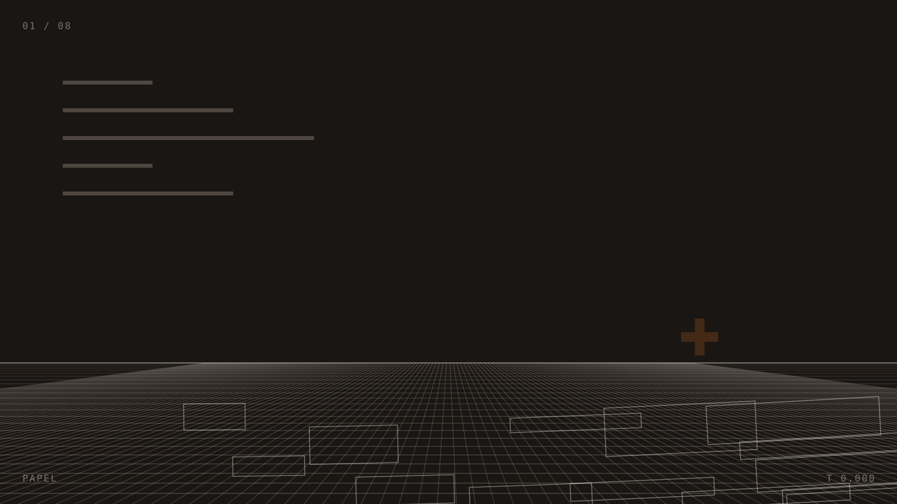
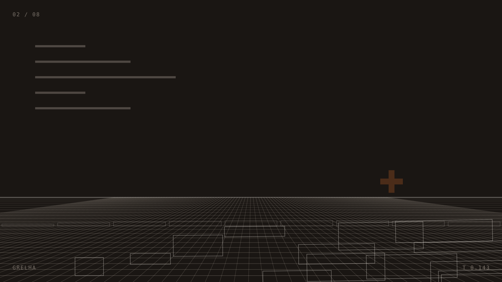
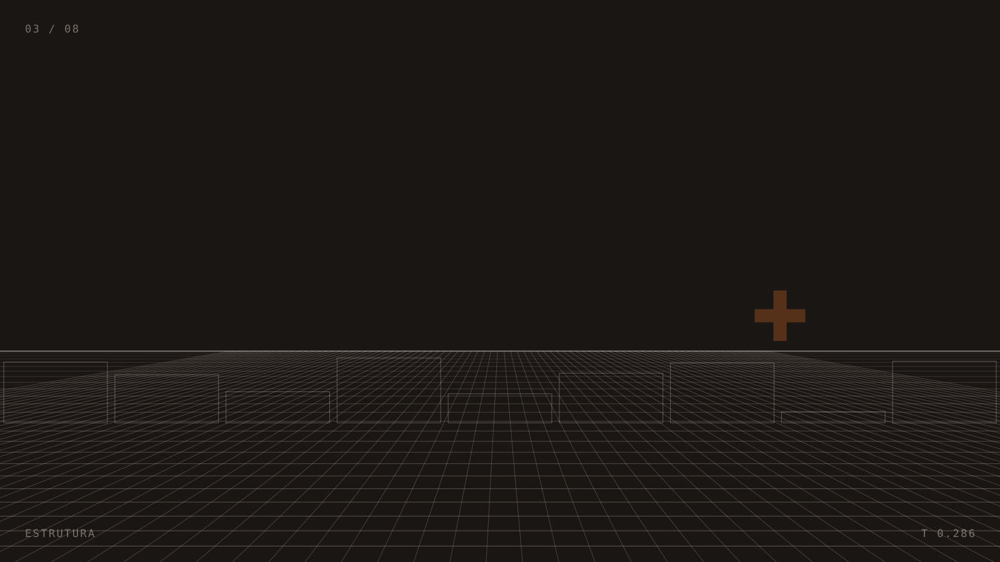
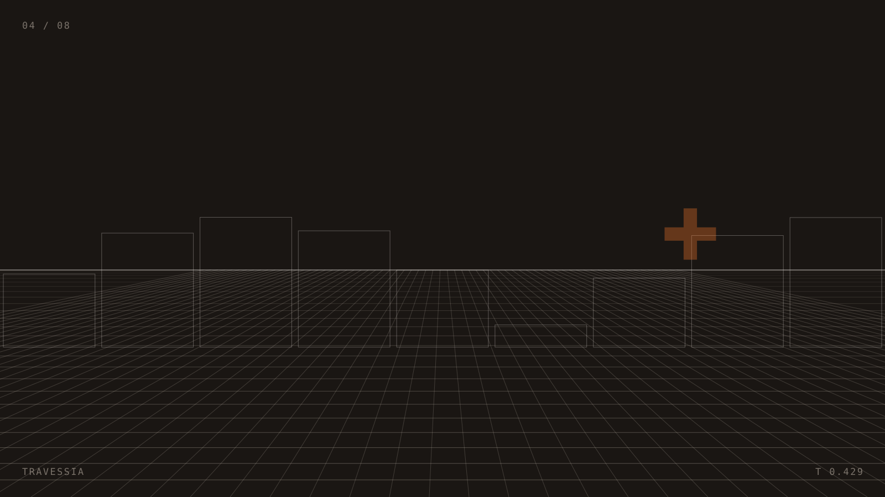
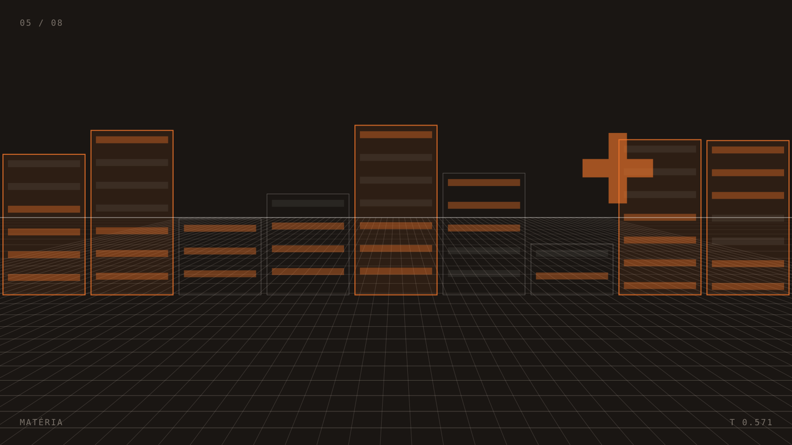
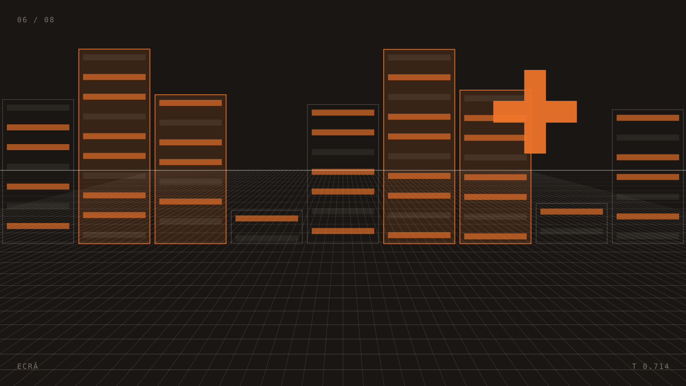
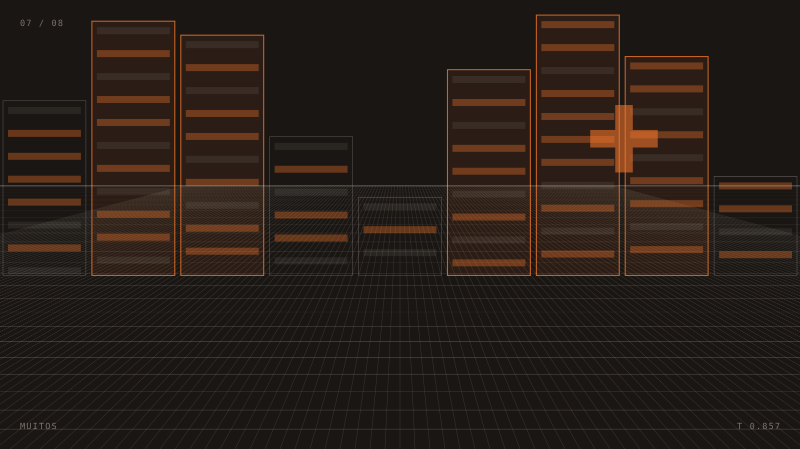
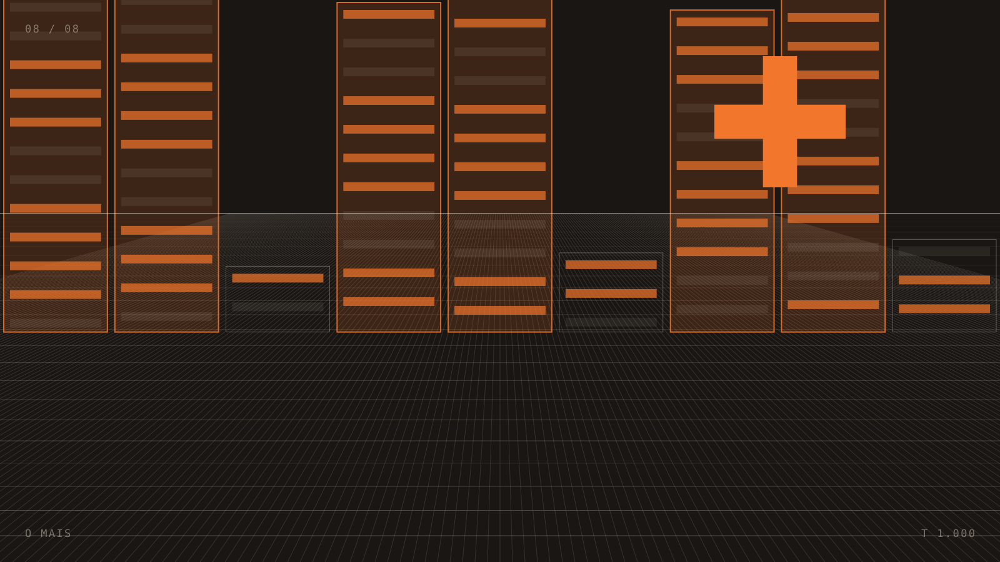

Desce. Isto é o percurso de um projeto, do primeiro traço até ao dia em que passa a trabalhar para ti.
Antes de qualquer cor, decide-se onde é que as coisas ficam. É a parte que ninguém vê e que se sente toda.
A grelha ganha altura. O que era esquema passa a ser sítio por onde se anda.
Um site bonito que não aguenta não serve. Passa cá dentro e vê como é que está montado.
É aqui que deixa de ser desenho.
Cada projeto atravessa este mesmo percurso. O que muda é para quem.